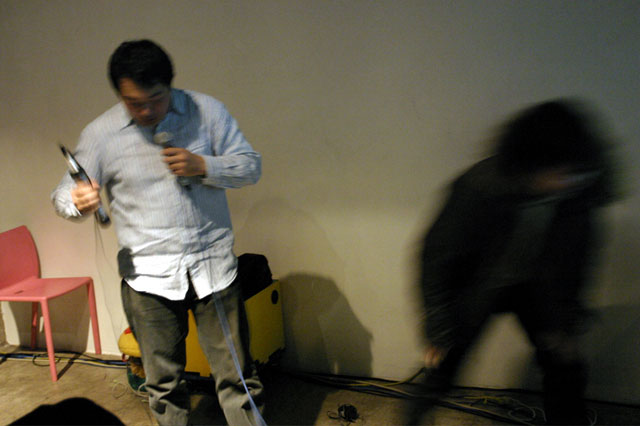
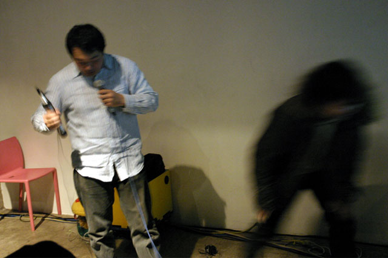

Index
Presenters
#000001
#000002
#000003
#000004
#番外編
#000005
#000006
#000007
|
#000004
電気ｷﾁGUYｽﾞ& GALｽ!!!ﾞ@ SDLX
2006年3月8日(水)，dorkbot TΩKYΩが六本木のスーパーデラックスに戻ってきた．4回目にあたる今回も，電気で変な事してる，だけをキーワードに強力なメンバが集った．
DJは初回に引き続き登場の「A.K.I.」，ポータブルラジオの周波数を自由自在に変調させていい感じに音楽にMIXしていく． 続いて一発目のプレゼンター「神奈川電子技術研究所」．普段は，みんなが知ってるあのゲーム，とはちょっと違ったゲームを，一緒に寝泊まりしながら作っている同人サークル．今回は，2つのプロジェクターを使って，「ロープランナー」，「ボンバーランナー」，「忍法鎖鎌」，「ＤＩＧ ＢＡＫＵ」，「エスカレータアクション」といった彼らの代表作を実際に（元ネタと比べつつ）プレイしながら，見た目のシンプルさと裏腹に力を注いでる力学系の動き（一見の価値あり），オリジナルのゲームに対する愛情，といった彼らの世界観を語ってくれた． 続いて一発目のプレゼンター「神奈川電子技術研究所」．普段は，みんなが知ってるあのゲーム，とはちょっと違ったゲームを，一緒に寝泊まりしながら作っている同人サークル．今回は，2つのプロジェクターを使って，「ロープランナー」，「ボンバーランナー」，「忍法鎖鎌」，「ＤＩＧ ＢＡＫＵ」，「エスカレータアクション」といった彼らの代表作を実際に（元ネタと比べつつ）プレイしながら，見た目のシンプルさと裏腹に力を注いでる力学系の動き（一見の価値あり），オリジナルのゲームに対する愛情，といった彼らの世界観を語ってくれた．
 2発目のプレゼンターは安藤英由樹 and 渡邊淳司．普段は研究者として活躍している彼ら，今回は脳の前庭感覚に電気刺激を与える技術を元ネタに，自分で自分を動かすシステム（といっても木桶なんだけど）を持ってきてくれた．木桶に入った船を揺らすとヘッドフォンの裏側に付けられた電極から，電気が流れ自分が揺れる．やってみる人ー，の呼びかけに応じた女の子を皮切りに，続々と彼らの元には，揺れたい人たちが集合．結局イベント終了まで列がとぎれることはなかった． 2発目のプレゼンターは安藤英由樹 and 渡邊淳司．普段は研究者として活躍している彼ら，今回は脳の前庭感覚に電気刺激を与える技術を元ネタに，自分で自分を動かすシステム（といっても木桶なんだけど）を持ってきてくれた．木桶に入った船を揺らすとヘッドフォンの裏側に付けられた電極から，電気が流れ自分が揺れる．やってみる人ー，の呼びかけに応じた女の子を皮切りに，続々と彼らの元には，揺れたい人たちが集合．結局イベント終了まで列がとぎれることはなかった．
  そして，3組目は森川栄司 and 大神佳人 from 株式会社HORI．リアルに指を振るわす高速連射コントロｰラ「オレコマンダｰ」，そして，ゲームしながらでもポテトチップを食べられる「ショクシ」を両手にひっさげ，クールは見た目とは裏腹に「ペリボーグ」シリーズについて熱く熱く語ってくれた．しかもプレゼン終了時にはじゃんけん大会で「ペリボーグ」シリーズとTシャツをプレゼントする，という太っ腹ぶり． そして，3組目は森川栄司 and 大神佳人 from 株式会社HORI．リアルに指を振るわす高速連射コントロｰラ「オレコマンダｰ」，そして，ゲームしながらでもポテトチップを食べられる「ショクシ」を両手にひっさげ，クールは見た目とは裏腹に「ペリボーグ」シリーズについて熱く熱く語ってくれた．しかもプレゼン終了時にはじゃんけん大会で「ペリボーグ」シリーズとTシャツをプレゼントする，という太っ腹ぶり．
 そして，神奈川電子技術研究所のゲーム，前庭刺激，オレコマンダｰとショクシを実際に会場で体験できるデモタイム，を挟んだ後には，2組のライブ！一つ目は，「Motallica」．150人くらいの来場者でいい感じに盛り上がってきたスーパーデラックスの中を，生のドラムのビートにあわせて，ウーファーを搭載した箱が所狭しとテケテケ走り回る． そして，神奈川電子技術研究所のゲーム，前庭刺激，オレコマンダｰとショクシを実際に会場で体験できるデモタイム，を挟んだ後には，2組のライブ！一つ目は，「Motallica」．150人くらいの来場者でいい感じに盛り上がってきたスーパーデラックスの中を，生のドラムのビートにあわせて，ウーファーを搭載した箱が所狭しとテケテケ走り回る．
 続いて，「枡本航太」．ギターをかき鳴らしていたか，と思ったら突然ピアノを弾き出し，ヒューマンビートボックス，と思ったらいきなり泣きのメロディーを歌い出す．みんな呆気にとられつつも目は離せない，というパフォーマンスだった． 続いて，「枡本航太」．ギターをかき鳴らしていたか，と思ったら突然ピアノを弾き出し，ヒューマンビートボックス，と思ったらいきなり泣きのメロディーを歌い出す．みんな呆気にとられつつも目は離せない，というパフォーマンスだった．
さらに，今回特筆すべきは，当日飛び入りも交えた5分プレゼンタイム．
・NYでのベンディングイベントbent2006にも参加したデブゴンアッシュ＋"打打打"のサーキットベンディングデュオ→→ ・永野哲久による画像に音のエフェクトをかけるソフトMonalisa Image Unit→→ ・ハープと電子楽器 女子2人組 auranoisazzzzzz∂∞Ω󧨨¨ のパフォーマンス→→ ・前庭刺激に引き続き，サッカード（視覚の錯覚）を使った研究・パフォーマンスの紹介by渡邊淳司 →→ ・キノコ型のノイズ楽器Mush_Worm.32をひっさげたZeniのパフォーマンス→→ ・2回目のドークボットに引き続き登場の徳井直生による異なる言語を音でつなぐプロジェクPhonethica→→ ・初回，会場を沸きに沸かせた，盗聴電機大学×音質向上委員会による，手振り発電型iPod Shuffle→→ ・コンピュータ制御のグラフィティーデバイスHektor by Jerg Lehni→→ ・初回，会場を沸きに沸かせた，盗聴電機大学×音質向上委員会による，手振り発電型iPod Shuffle→→ ・コンピュータ制御のグラフィティーデバイスHektor by Jerg Lehni→→
計8つの電気で変な事，が1時間足らずの間にものすごい勢いでみんなの前に現れた.
次回，次々回はちょっぴり場所を変えて夏頃開催する予定（遠征もあるかも？？あとは海のそばとか）．こうご期待！われこそは（電気で変なこととしてる）という人，是非コンタクトしてください．最後になりましたが，出演者，スーパーデラックスのスタッフの皆様，サポートスタッフの皆様，そして来場者の皆様，ありがとうございました．今後ともdorkbot TΩKYΩよろしくお願いします．
Text by 城一裕 (S.W.O.)
#000004
日時: 2006.03.08
会場: SuperDeluxe
プレゼンテーション:
神奈川電子技術研究所
森川栄司, 大神佳人 from 株式会社HORI
前庭刺激 by 安藤英由樹, 渡邊淳司, 前田太郎
ライブ:
枡本航太
Motallica
5分プレゼン:
デブゴンアッシュ＋打打打
永野哲久
auranoisazzzzzz∂∞Ωσ§
渡邊淳司
Zeni
徳井直生
盗聴電機大学×音質向上委員会
Jerg Lehni
DJ:
A.K.I. (KRUSH GROUP/A.K.I.PRODUCTIONS)（☆∀☆）
企画進行: exonemo / 堀尾寛太 / 城一裕
協力: SuperDeluxe
ｻﾎﾟｰﾄｽﾀｯﾌ: 小山雄介 / 福岡康香/ 村上和代 / 福沢恭 / 中野翔太郎 / 毛利悠子
ﾌﾗｲﾔｰ: ﾃﾞﾋﾞｯﾄﾞ（生意気）
| |